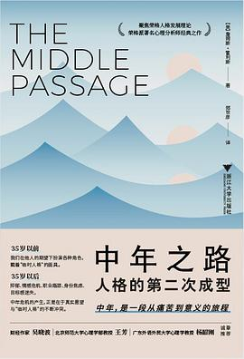

《中年之路 : 人格的第二次成型》

总体观点
中年危机绝不是换辆跑车、离一次婚或换一份高薪工作就能解决的外在危机，而是第一成年期所建立的‘虚假自我防御机制’全面崩溃带来的内在必然震荡。
我们前半生的大多数奋斗与追求，本质上只是在被动迎合父母的期待、社会的规训以及应对童年创伤的防御面具；直到中年，沉睡的‘自性（Self）’才开始发出愤怒的抗议。
中年是人生一次神圣的转折航程（The Middle Passage）：只有勇敢穿过无意义感的幽暗密林，哀悼曾经的幻觉，收回对外在投射的苛责，我们才能真正卸下面具，完成灵魂的自主成型。
核心观点
-
1. 第一成年期的自我，本质上是应对童年脆弱感的‘防御装甲’
为了在家庭中生存并获得爱，我们很早就学会压抑真实感受，扮演懂事的孩子、成功的学霸或可靠的供养者，这只是生存策略而非真实的自我。
中年律师在事业顶峰突然感到彻骨的空虚与厌恶，分析后发现自己学法律从来不是因为热爱，仅仅是为了讨好那位严厉控制欲极强的父亲。 -
2. 中年危机是灵魂的‘地震救援’：痛苦是在敲碎虚假的面具
抑郁、焦虑、失眠与婚姻危机是潜意识发出的严厉警报，提醒你旧的生活脚本已经彻底报废，不可再自欺欺人维系假象。
许多中年人把抑郁当成纯粹的病理性障碍急于用药消除，却忽略了抑郁正是潜意识在逼迫你从疯狂内卷的名利场停下脚步向内看。 -
3. 收回在伴侣身上的‘救赎者投射’，是婚姻走出死局的前提
我们总幻想伴侣能无条件弥补自己童年的一切情感缺失，这种神圣化投射一旦破灭就会转化为无尽的怨恨；伴侣只是凡人，救赎必须靠自己。
妻子指责丈夫‘冷漠自私毁了我一生’，在治疗中顿悟自己其实是将对冷漠母亲的绝望渴望错误寄托在了丈夫身上，婚姻终于放下对立。 -
4. 直面内心的‘阴影（Shadow）’：接纳那些被你长期排斥在外的弱点
越是自诩道德完美、理性自控的人，其潜意识里的阴影越是积蓄着暴戾的毁灭能量；唯有承认自身的软弱、贪婪与嫉妒，人格才能走向完整。
一辈子克己奉公、从不发火的模范员工在五十岁突然毫无征兆地在公共场合歇斯底里大发雷霆，正是被长期压抑的攻击性阴影的毁灭性反噬。 -
5. 哀悼丧失与直面死亡：中年是对有限性与脆弱性的彻底和解
前半生我们幻想未来拥有无限可能，而中年不得不目睹父母老去离世、肉体机能衰退，唯有彻底哀悼并接纳死亡，生命才会焕发厚重的敬畏。
在父母墓前痛哭的中年人终于明白：自己已经成为站在死亡悬崖最前线的那一代人，不再有任何长辈替自己遮挡岁月的风雨。 -
6. 从‘外在自我（Ego）’走向‘内在自性（Self）’：承担属于你自己的独特天命
后半生的核心任务不再是赢得外界掌声与同龄人比较，而是回答那个终极问题：‘如果剥离了所有社会标签与别人眼光，我究竟是谁？’
高管放下高薪年薪毅然重拾年轻时的木工手艺，在雕琢一块块木头的呼吸中，体验到半生未曾有过的充实与灵魂安宁。
全书思维导图 · 知识脉络树
全书结构
-
序言与引论：听从内心的召唤
界定“中年之路”的核心命题：中年危机并非生理年龄的偶发事件，而是一场不可避免的心理危机与心灵转型契机，要求个体从前半生迎合外界期待的虚假自我中觉醒，开启人格的第二次成型。
“临时人格”面临破产的困惑；中年人突如其来的抑郁与虚无感；荣格关于人生前后半段截然不同任务的经典划分。 -
第一章 临时的人格
深入剖析人在成长与成年早期如何为了顺应家庭规范与社会期待而构筑起一套妥协性、防御性的“临时人格”，以及童年未解创伤与潜意识个人情结如何固化这种虚假自我。
童年期为获取父母认同而做出的自我压抑；潜意识情结对成年后选择的隐秘操纵；将社会角色误认为真实自我的认知错位。 -
第二章 中年之路的出现
探讨当个体步入人生中场时，原有生存策略与防御机制失效引发的内在震荡与神经症痛苦，阐明这种痛苦实质是心灵深处的自救信号，迫使人们撤回对外在世界的投射并建立新的思维方式。
内在压力与身体、时间感衰老变化的预警；曾经的抱负与希望逐渐减退；神经症体验作为人格进一步深化的催化剂。 -
第三章 内在的转变
全景考察中年转型在现实生活各大核心领域的剧烈爆发：人格面具与压抑阴影的激烈对抗、亲密关系中浪漫投射破灭与中年外遇、未解决的父母情结对职业使命的阻碍，以及劣势功能的突然失控。
人格面具与阴影的公开交锋；中年婚姻危机与情感出轨的潜意识心理动因；从“谋生工作”向“灵魂天命”的觉醒转型；劣势功能带来的行为失常。 -
第四章 文学案例研究
借助世界文学大师的经典作品剖析人类面对中年危机与灵魂黑夜时的普遍心理困境，从歌德、福楼拜、陀思妥耶夫斯基等名著中提炼出中年转型的深层隐喻与反面警示。
歌德《浮士德》中与魔鬼交易及生命救赎；福楼拜《包法利夫人》中因执迷浪漫幻想导致的自我毁灭；陀思妥耶夫斯基《地下室手记》中的分裂与孤独自省。 -
第五章 个性化：荣格的当代神话
系统阐述荣格分析心理学中“自性化”（个体化）的终极追求，指出走出中年危机的真正路径在于勇敢做出伦理选择与自我承担，从集体无意识的沉睡中觉醒，成为独特而完整的自我。
个体化历程中的独立决断与责任担当；自性（Self）对意识自我（Ego）的重构与统合；荣格当代神话对现代人精神虚无与荒原的救赎力量。 -
第六章 航海与孤独
总结穿越中年之路的心灵航程：探讨如何将痛苦的孤独感升华为富足的心灵独处，直面与亲人及过往的丧失分离创伤，举行直面恐惧的仪式，连接内心失落的内在孩童，在生活的沼泽地里重燃生命之光。
从恐惧孤立走向自在独处的心理跨越；撤回投射、消化分离与哀悼丧失；直面死亡与恐惧的心灵仪式；找回失落的内在孩童与拥抱激情的后半生。